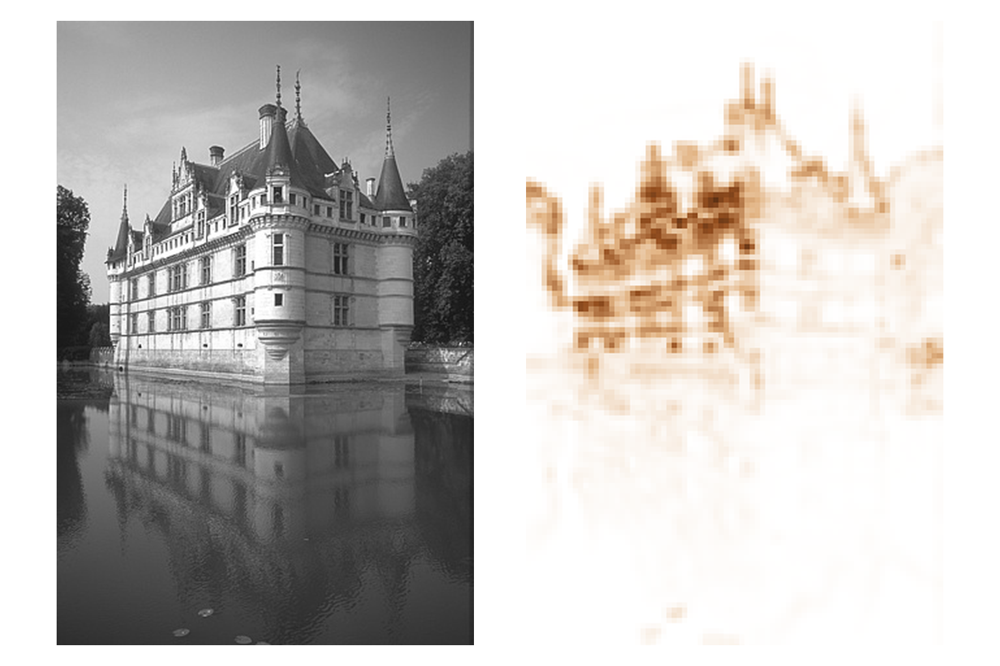

Reliable Sparse Representation Learning
How should a sparse model learn when some observations are more reliable than others? This project explores that question through image denoising and masked inpainting.
Explore the projectNotes on mathematics, machine learning, and research.

How should a sparse model learn when some observations are more reliable than others? This project explores that question through image denoising and masked inpainting.
Explore the project